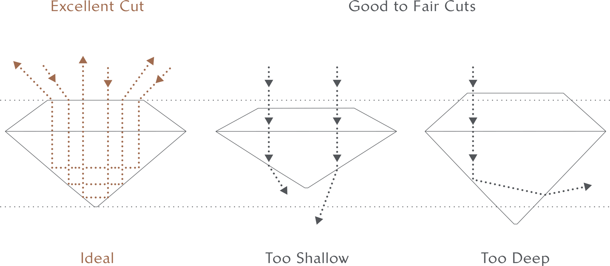
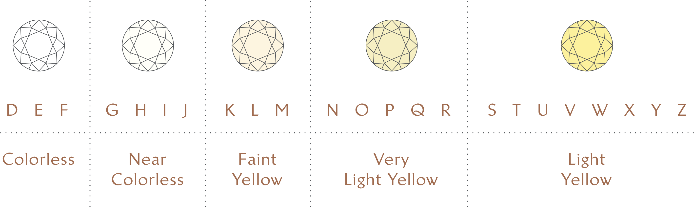
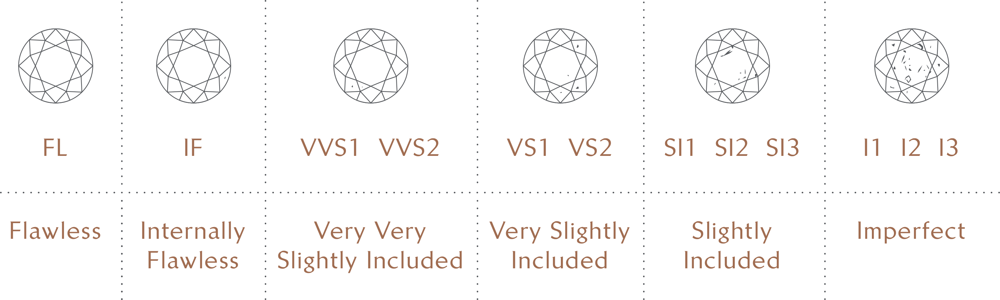

Le 4C di Diamanti

Taglio
La bellezza di un diamante è prevalentemente determinata dal suo taglio che si riferisce al modo in cui un diamante è modellato e lucidato per dargli brillantezza e fuoco. Tra i 4C, il taglio è l'unico elemento che è sotto il controllo dello sforzo umano.
Proporzione Ideale
Le proporzioni danno un ruolo significativo nel taglio di un diamante. I diamanti più belli sono tagliati a proporzioni di taglio rigorosamente definite per garantire il massimo ritorno di luce brillante, luce dispersa e scintillazione da un diamante. Se un diamante viene tagliato troppo in profondità, un centro scuro emergerà nella pietra. D'altra parte, un diamante che è tagliato troppo poco profondo scatenerà un aspetto cavo con acuto.
.png)
Carato
Il peso di un diamante è misurato in carati.
Un carato equivale a 0,2 grammi (o 100 punti). I diamanti sono valutati in base alle categorie di peso; più grande è la pietra, più costoso, riflettendo crescente rarità naturale. Il peso, tuttavia, non equivale al diametro; rafforzando così l'importanza del taglio.

Colore
I diamanti possono apparire incolori, ma in realtà hanno tracce di giallo o marrone. Quando si tratta di colori, meno è meglio. I gradi di colore di diamante vanno da incolore D a colore giallo chiaro Z. D è considerato il migliore e il più raro, così sarà il più desiderato e il più prezioso.

Purezza
Come gli esseri umani, i diamanti non sono perfetti - sono dotati di difetti. Questi difetti influenzano la classificazione di chiarezza di un diamante che è determinato dalla dimensione, posizione e il numero di piccoli segni naturali, noti come inclusioni, presenti nella maggior parte dei diamanti. Questi segni sono considerati come le "impronte digitali" di un diamante, rendendo ogni pietra unica con il proprio insieme di caratteristiche identificative. Il grado di chiarezza di un diamante è determinato sotto l'ingrandimento 10x e generalmente non influisce sulla bellezza del diamante